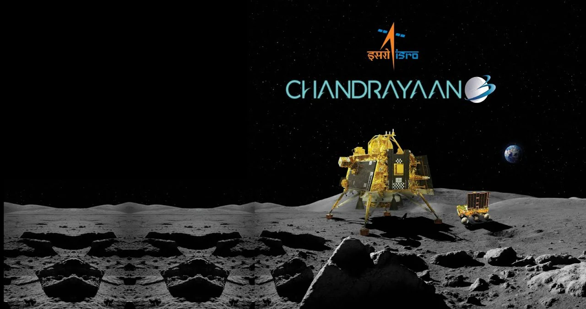

CHANDRAYAAN 3
The INDIAN Satellite to MOON
The INDIAN Satellite to MOON
Chandrayaan-3 is the third Indian lunar exploration mission under the Indian Space Research Organisation's (ISRO) Chandrayaan programme. It consists of a lander named Vikram and a rover named Pragyan, similar to those of the Chandrayaan-2 mission. The propulsion module carried the lander and rover configuration to lunar orbit in preparation for a powered descent by the lander.
Chandrayaan-3 was launched on 14 July 2023. The spacecraft entered lunar orbit on 5 August, and the lander touched down in the lunar south pole region[9] on 23 August 2023 at 12:32 UTC, making India the fourth country to successfully land on the Moon, and the first to do so near the lunar south pole using indigenous rocket.
On 22 July 2019, ISRO launched Chandrayaan-2 on board a Launch Vehicle Mark-3 (LVM3) launch vehicle consisting of an orbiter, a lander and a rover.[14] The lander was scheduled to touch down on the lunar surface on 6 September 2019 to deploy the Pragyan rover. The lander ultimately crashed when it lost contact with earth (ISRO) and deviated from its intended trajectory while attempting to land near the lunar south pole.
The lunar South Pole region holds particular interest for scientific exploration due to studies that show large amounts of ice there. Mountainous terrain and unpredictable lighting conditions not only protect the ice from melting, but also make landing scientific probes there a challenging undertaking. This ice could contain solid-state compounds that would normally melt under warmer conditions elsewhere on the Moon, compounds which could provide insight into lunar, Earth, and Solar System history. Ice could also be used as a source of drinking water and hydrogen for fuel and oxygen for future manned missions and outposts.